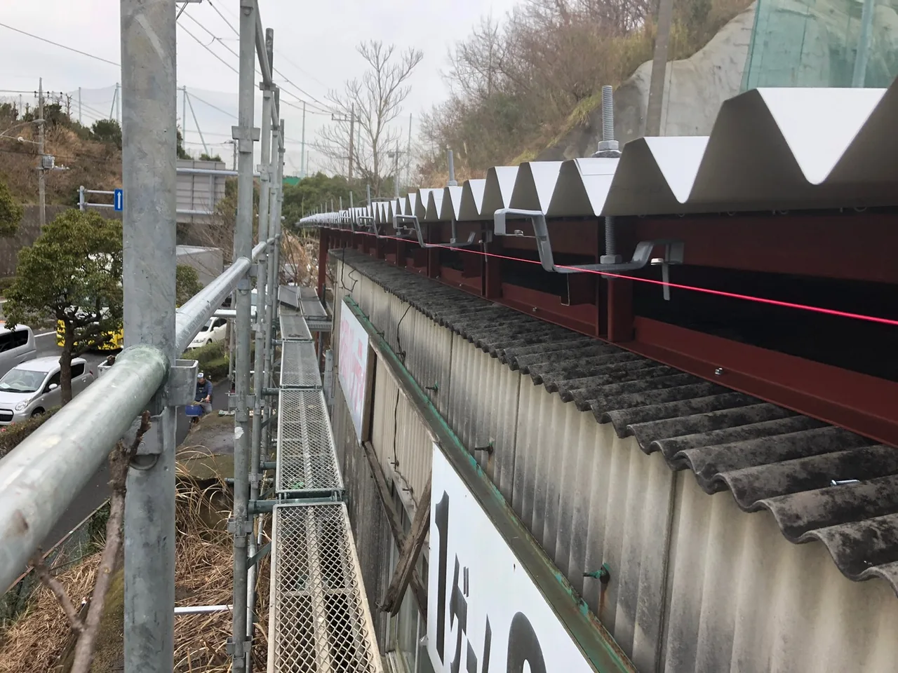

OONUMA SHOKAI JOURNAL
屋根修理(リフォーム)業者の選定基準

・Q.屋根修理業者って何を基準に選べばいいの？
A.絶対に信頼できるかどうかです！！
今この記事を読んでいる方は、「屋根のリフォームをしたいけど、どこに頼んだらいいの。」や、「雨漏りしてきたから修理してほしいけど、どこに依頼をしたらいいのだろう。」と思って読んでくださっていると思います。私は冒頭書いたように「信頼できるかどうか」を基準に依頼をしてほしいと願っております。
選定で悩んでいる方は、何か他の買い物で失敗したり、リフォーム業者の杜撰な工事のニュースで見たりと、不安な要素の経験があります。だからこそ信頼性を重視することが大事なのです。
・選定基準①価格
どんな依頼をするにしても一番気になるのは価格です。
本来はこの記事内で相場を記載したいのですが、施工面積や屋根材によってかなり変わってしまうので、「この金額より高い(安い)ならやめましょう」とは言えません。
なので、必ず相見積をしましょう。
2業者だとどちらが相場なのかわからないので、3業者以上を目安に相見積を取ってください。
見積金額が高いのは詐欺まがいな業者の可能性もありますし、見積金額が安いのは杜撰な施工をされる可能性があります。
こういった業者の施工後問題が発生し、再度修理依頼をしなくてはならないということもあります。余計に費用が掛かるので、それは避けたいですよね。
・選定基準②口コミ
インターネットにたくさんの情報が溢れているので、しっかり調べましょう。
あるブログには、「この業者がおすすめ」と書かれていたが、その業者のクチコミを見るとあまりよくないことが書かれていたりします。どちらが信憑性の高い情報か見極める必要がありますが、他の業者と比較するといいと思います。
インターネットだけではなく、家族や友人のような仲の良い方の意見は信憑性が高いので身近に経験のある方がいるのであれば、相談した方がいいです。
・選定基準③屋根材
せっかく施工するなら、屋根自体のデザインや機能もアップグレードしたいですよね。
伝統的な和瓦やデザイン性の高いスレート、軽量で耐震性にも効果がある金属製など選択肢は様々です。
金属製の屋根というと錆びやすく脆いトタンのイメージがありますが、近年はガルバリウム鋼板を使用した金属製の屋根材が注目されています。
耐久性が高く、スレートでは10年に1回再塗装のメンテナンスが必要ですが、ガルバリウム鋼板の屋根材は15年のメーカ保証もついており、その耐久性は25年以上とも言われています。阪神淡路大震災や東日本大震災などの際、伝統的な和瓦の家屋が倒壊していたことから軽量で耐久性もあるガルバリウム鋼板の屋根が注目されました。もちろん家屋自体の老朽化もありますが、屋根の軽量化で耐震性は変わります。
最近では、金属製の屋根のイメージを払拭するようなデザインあり人気があります。
気になった屋根材を取り扱っている業者を選ぶと良いでしょう。
・選定基準④業者(担当者)の雰囲気
業者の信頼をする上で大事なのは、やはり業者の雰囲気です。
特に大事なのは現地調査の際です。実際に担当者と会話をすることで信頼関係は生まれると思います。
前述のように原因箇所を写真で見せて説明してくれたり、施工内容を分かりやすく説明してくれたりする業者は信用できるのではないでしょうか。
インターネットや現地でも情報がないと信頼するのは難しいので、オープンな業者を選ぶようにしましょう。
どの業者に依頼するのが正解っていうのは無いです。
ただ注意してほしいのは、C社です。
少なからずC社の担当者に不満を持ったにも関わらず、クチコミがいいのは信用できなくないですか？
逆に信用しやすいのはB社かなと思います。屋根材さえ違っていればお願いしたいですよね。
ただ担当者さんも雰囲気良かったので相談してみるのもいいかもしれません。
・屋根とは
ここまでで業者選定のポイントは抑えられたと思います。
なぜここまで業者選定が大事なのか。
それは衣食住の住であるからです。
家は家族を雨風から守っている存在です。多くの方は「屋根は家の中に雨が入ってこないようにするもの。」と思っているかもしれませんが、屋根がなければ柱も濡れ、いずれ家は倒壊してしまいます。屋根は家そのものを守っているのです。
家を守るためにも信頼できる業者を選定するのが大事なのです。
・大沼商会の強み
ここまでのポイントを理解しても良い業者はたくさんあるので決め手に欠けるということもあるかと思います。
私たち、株式会社 大沼商会は生粋の 屋根バカ集団 と自負しております。
お客様の安心の為、職人は1級建築板金技能士を取得しております。
知識と技術を兼ね備えた職人がプライドを持って施工しますので、お任せください。
・最後に
屋根修理業者にも悪徳業者と言われる業者は多数あります。
そして業者の決定権はお客様自身にあります。
悪徳業者の被害に遭われるお客様がいなくなることを願っております。
その一端として株式会社 大沼商会を選んでいただく機会が増えるよう努力してまいります。
2023年02月07日公開の記事です。内容は掲載当時のものです。